- light sensor for automatic adjustment (day/night) of the instrument brightness.
Warning and fault warning lights
The warning and fault warning lights are shown by means of the special LED or in the centre display. The diagram summarizes the symbols used:
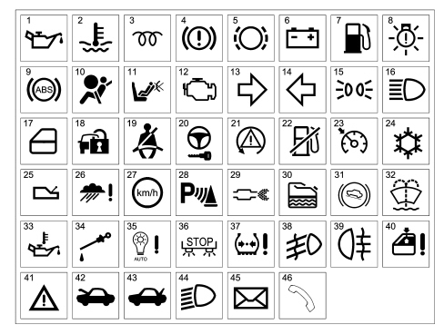
1 Insufficient oil pressure
2 Engine coolant overheating
3 Heater plugs (Diesel only)
4 Handbrake applied - insufficient brake fluid - EBD failure (with ABS warning light activated)
5 Brake pad wear
6 Alternator failure
7 Fuel reserve
8 Exterior lighting failure
9 ABS failure
10 Air Bag failure
11 Passenger Air Bag deactivated
12 EOBD (engine management system failure)
13 Right direction indicator
14 Left direction indicator
15 Side lights
16 Main beam headlamp
17 Door/s open
18 Immobilizer failure (CODE)
19 Seat belts not fastened
20 TEG Reader failure
21 VDC
22 Inertia switch operation
23 Cruise Control
24 Danger - Ice signal
25 Automatic/robotized transmission failure
26 Rain sensor failure
27 Speed limit warning
28 Parking sensor failure
29 DPF filter blocked (Diesel only)
30 Water in diesel filter sensor (Diesel only)
31 Hill Holder operation
32 Windscreen washer fluid level
33 Engine oil overheating
34 Engine oil level
35 Dusk sensor failure
36 Brake lights failure
37 Insufficient tyre inflation pressure
38 Fog lights
39 Rear fog lamps
40 Windows anti-crush safety device failure
41 General failure
42 Bonnet open
43 Boot open
44 Dipped headlamps
45 Incoming SMS
46 Incoming telephone call
HIGH INSTRUMENT PANEL
Speedometer
The system calculates the value of the actual vehicle speed starting with the values supplied by the sensors on the two drive wheels and the value of the actual circumference of the wheels, supplied by the on board computer. The electronic control and operating structure is achieved by means of a microprocessor.
The speedometer reading is produced by means of a stepping motor.

|
The instrument panel increases the value of the effective speed slightly, for safety reasons, but never exceeds the maximum tolerance laid down by the directives for the countries where the vehicle is sold. |
The actual speed of the vehicle is provided even if one or two of the drive wheel sensors is broken.
If there is a fault in the vehicle speed sensor the instrument panel returns the indicator to the rest position.
Rev counter
The control and operating electronics use a microprocessor with the reading produced using a stepping motor guaranteeing precision and continuity throughout the entire scale and a reading in extreme operating conditions.
The rev counter on diesel and petrol versions differs through the maximum end of scale value (6000 rpm for diesel versions and 8000 rpm for petrol versions) and through the start of the red danger zone (4500 rpm for diesel versions and 6800 rpm for petrol versions).
Buzzer
A buzzer offers the possibility of managing signals of different intensity for the following functions:
- Signalling doors open with the vehicle moving
- Signalling handbrake applied with the vehicle moving
- Signalling parking sensors
- Warning speed limit exceeded
- Acoustic feedback on activation of functions using buttons
- Acoustic feedback on memorizing of seat and exterior mirrors position
- Signalling of reverse gear and automatic/robotized transmission safety position
- Signalling of driver''s door open with TEG inserted
- Feedback on warnings/alarms shown in the display
Brightness sensor
This sensor, located in the speedometer panel, has the task of measuring the environmental light conditions and of sending this information (day or night) to the Body Computer which, on comparing this information with the status of the side lights, will select the suitable configuration for the vehicle interior lighting (daytime or nightime mode).
With this information available, the behaviour of the instrument is as follows:
- In "daytime" mode the display can be adjusted to 8 settings, the graphics are switched off, the index lighting is 100% and cannot be adjusted.
- In "nightime" mode the display, the graphics and the indexes can be adjusted to 8 settings and the level set will be transmitted to the components that regulate the brightness (climate control display, radio display).
Keys
The following buttons are fitted on the left steering column switch unit lever:
- “MENU”
- “MENU +”
- “MENU -“
and carry out the following functions: management of the setup menu; dimming and activation/deactivation of the night panel.
The following buttons are fitted on the right steering column switch unit lever:
- “TRIP”
- “TRIP UP”
- “TRIP DOWN”
and are used for the management of the Trip Computer and the TPMS wheel check screen.
The button dedicated to the operation of the "km" trip meter is located in the left panel and has the function of zeroing it through a long press.
Reconfigurable matrix display
The visible area of the display is 50 mm wide and 70 mm high with a resolution of 124x174 pixel and is divided into zones as illustrated in the diagram below:
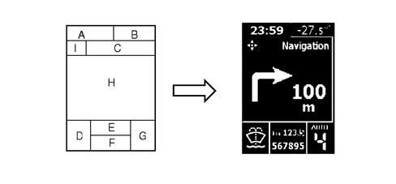
A - Time
B - Outside temperature
C - Function displayed
D - Failure symbols/ideograms (two tone red/amber area)
E - Trip meter
F - Total milometer
G - Automatic/Selespeed transmission information (if present)
H - Messages, Trip Computer, bar graph, Set-up menu, Service, Date, vehicle image in 3D, Radio info, Navigation info, etc.
I - Function displayed identification symbol
Main functions (high)
Trip computer and tpms check
There are two TRIP modes:
- TRIP A (with manual reset only);
- TRIP B (with manual or automatic reset from key-on that can be set using the setup menu) divided and with the sequence described below, activated using the special button.
TRIP A:
- Range
- Distance travelled - A
- Average consumption - A
- Instant fuel consumption
- Average speed - A
- Journey time - A
TRIP B
- Range
- Distance travelled - B
- Average consumption - B
- Instant fuel consumption
- Average speed - B
- Journey time - B
Every TRIP screen simultaneously displays two TRIP items activated at that time (TRIP A or B); these items are displayed one in the top part of the screen and the other in the bottom part.
Entry into the Trip Computer ambient takes place by pressing the TRIP button on the steering column switch unit windscreen wiper lever.
The first time the TRIP is pressed the figures for Trip A are displayed and the second time it is pressed those for Trip B are shown.
If the TPMS option is present, the third time it is pressed the tyre inflation pressure check screen is displayed, otherwise the Trip ambient is exited.
To move from one Trip Computer figure to the next, the rocker switch on the windscreen wiper lever must be operated.
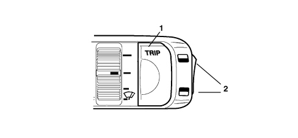
1. TRIP button activation
2. TRIP function buttons
The Trip is reset by pressing the TRIP button for a while whilst Trip A or Trip B is displayed.
Setup menu
For safety reasons, the complete menu cannot be accessed when the vehicle is moving.
When the NIT is present on the version, the menu will be shown on the NIT display.
All the possible setup menu options, the choices available and the factory (default) setting for each selection are listed below (some options may or may not be present depending on the vehicle trim level).
Speed limit:
-
XXX: numerical value of the speed set.
-
YYY: unit of measurement set.
-
Default: OFF
-
Default if ON: 130 km/h or equivalent in mph
Dusk sensor setting adjustment:
-
Bargraph in display - adjustment to 3 levels
TRIP B reset mode
-
Default: manual
Setting the clock
-
Default: 00:00
-
the hour flashes.
-
when the time is <10 the initial "0" should not be displayed
-
Default: 00:00
-
the minutes flash
Time mode
-
“24h” or “12h”
-
Default: 24h
Date adjustment
-
The year flashes
-
The default value is the release year of the instrument panel software, e.g.: 2005
-
The months flash
-
Default: 01
-
The days flash
-
Default: 01
Audio repetition
-
Default: OFF
Door lock/unlock:
-
Boot unlocking together with unlocking of all the doors
-
Default: OFF
-
Unlocking of the driver''s front door only
-
Default: OFF
-
Automatic locking of doors and boot above 20 km/h
-
Default: OFF
Unit of measurement setting
-
Unit of measurement for distances: default: km
-
Unit of measurement for consumption: default: l/100km
-
Unit of measurement for temperatures: default: °C
Various settings
-
Language setting
-
Three items are displayed at a time
-
Volume of buzzer for alarms/failures/warnings
-
Display with bar graph - 8 setting adjustment
-
Button pressing buzzer volume (roger beep)
-
Display with bar graph - 8 setting adjustment
Service interval (km/miles/days)
-
XXX: value
-
YY: unit of measurement set for distances, ("km" or "mi")
Sealt Belt Reminder
-
Default: OFF
-
This item is only present if the system has been deactivated
|
|
|
Lighting that can be dimmed with brightness sensor and night panel
The HIGH version allows the user to adjustment the brightness of the graphics, indexes, instrument panel display, instruments, radio and climate control by pressing the "Menu +" and "Menu -" buttons located at the side on the lights lever.

1 Menu +
2 Menu –
The indexes are always lit up at the key-on.
Two different brightness settings can be adjusted by the user and memorized by the instrument, one for the daytime mode and one for the nightime mode.
The Night Panel function can be activated in the "Nightime Mode " status by pressing the "Menu -" button for about 2 seconds.
The activation of the Night Panel switches off the backlighting of the rev counter panel and the instrument panel graphics, whilst the backlighting of the speedometer panel and the display remains activated and can be dimmed.
Once activated, the Night Panel function can be deactivated in the following ways:
- By pressing the "Menu + " button for about 2 seconds
- automatically at each key-OFF
Display of information relating to planned maintenance
When the programmed maintenance (service) is close, the message is automatically displayed at the key on (after the initial check procedure) followed by the number of kilometres, miles or the days until the next service is due.
The display of the programmed maintenance information can also be shown if the user requests by selecting a special item in the setup menu. In this case the display is possible, irrespective of the intervals.
The starting date for the mileage is 20,000 km (or 12,000 miles).
Display logic for instrument panel in automatic service conditions:
The first message is displayed once at the key on, if one of the following conditions occurs:
- the kilometres or miles (depending on the unit of measurement set) until the next service are equal to or less than the limit
- there are 30 or less days until the next service
Later on the message is displayed only once at the key-on, each time the value is equal to or less than the following partial level values:
1800, 1600, 1400, 1200, 1000, 800, 600, 400, 200, 100, 50 km (or partial corresponding levels in miles) and 27, 24, 21, 18, 15, 12, 9, 6, 3 days; no longer displayed at subsequent keys-on
When the service interval is reached, a service message is displayed at each key-on: e.g.:

Display logic as requested by the driver:
The information relating to the programmed maintenance can be displayed at any time by selecting the relevant item using the SET-UP MENU.
|
|
Once all 9 services have been exhausted, no message is displayed automatically and it is no longer possible to select the item from the set-up menu. |
Display of engine oil level
Two seconds after the key-ON the display shows information concerning the engine oil level, for about 3 seconds, by switching the six "bars" on/off (bargraph). The maximum oil level is represented by all the bars lit.
The MIN and MAX values shown on the display correspond to the MIN and MAX levels on the oil dipstick, e.g.:
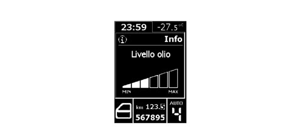
The gradual switching off of the "bars" indicates a decreasing oil level.
If the oil level is below the minimum recommended level, the screen described above is not displayed and a "minimum oil level" message appears in its place.
If the oil level is beyond the maximum level, then an "oil level too high" message will appear.
At the first key-on after the battery has been disconnected, if no information relating to the engine oil level is available, the specific screen will be omitted.
Warning lights for particle filter system
The system that manages the operation of the particle filter has three warning lights in the instrument panel for signalling the accumulation status of the actual filter.
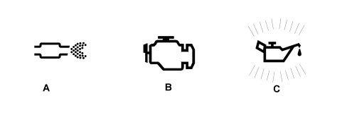
The "filter blocked" warning light (A) is activated after a certain number of "unsuccessful" regenerations, i.e. if the driving behaviour at that moment does not allow the automatic activation of the regeneration procedure or this operation has not been successfully concluded on account of another problem.
It is advisable to keep the vehicle running for a while to try and carry out the regeneration, otherwise, if the warning light remains on, it is vital to carry out the forced regeneration using the diagnostic equipment (Examiner):
Op. 0520G12 PARTICULATE FILTER (D.P.F.) - REGENERATION EXAMINER
With warning light (A) on, the EOBD warning light (B) also comes on if the condition of the filter deteriorates (the accumulation level of 250% is exceeded) so that the smooth operation and condition of the exhaust system is put at risk. In this case it is vital to carry out the forced regeneration using the diagnostic equipment (Examiner):
Op. 0520G12 PARTICULATE FILTER (D.P.F.) - REGENERATION EXAMINER
Warning light (B) comes on even with warning light (A) off, if errors have been detected, e.g. relating to the DPF system sensors: in this case, use the diagnostic equipment for all cases of the EOBD warning light coming on.
It is possible, during the filter regeneration stage, that the particulate being "washed" may pollute the engine oil.
For this reason, the "minimum engine oil pressure" warning light (C) is also used on engines with a DPF filter that flashes together with the message "Change the engine oil" in the display when the system detects that the engine oil has deteriorated to a certain extent, requesting an oil change in advance of the programmed one (managed by the control panel - Service function).
The extent of the oil deterioration is not measured by a dedicated sensor, but calculated by an algorithm in the engine management control unit depending on: the number of DPF regenerations, kilometres travelled (mileage), number of engine starting cycles, number of cold starts, average value of the oil temperature, etc.
The warning light turns on and flashes along with the message on the display when the system detects that the engine oil is exhausted. After the initial signalling, each time the engine is started up, the warning light continues to flash for 60 seconds and then every 2 hours until the oil is changed.
Once the oil is changed the Service function must be reset as described.
Op. 0010K PROGRAMMED MAINTENANCE, EMISSION CONTROL VERSIONS UP TO 90,000KM
Failure or warning signals
The instrument panel display can show numerous messages and symbols in 8 languages that can be selected from the setup menu.
Sometimes, the displays are accompanied by graphic representations of the vehicle.
Display of clock, date and outside temperature
The hh:mm reading remains present at the key-ON.
The clock can be adjusted using the set-up menu, moreover the hh:mm information in "24h" or "12h" mode can be selected from the menu: in the latter case, either "AM" or "PM" appears.
The date, which can be set using the setup menu, is displayed when no information with a greater priority is requested (e.g. failure/warning messages; Trip Computer, Setup menu, audio repetition, etc.).
The outside temperature is always shown at the key-on except when the parking sensor screen is displayed.
The unit of measurement (degrees centigrade or Fahrenheit) can be selected using the setup menu.
Automatic/selespeed transmission information display
The instructions for applying the automatic transmission/SELESPEED are shown in the bottom right of the display: for more details
See descriptions 2127 ELECTRO-HYDRAULIC SELECTION GEARBOX EXTERNAL CONTROLS
See descriptions 2135 AUTOMATIC TRANSMISSION EXTERNAL CONTROLS
Milometer and trip meter display
The area dedicated to the display of the milometer is the lower one, to the right of the symbol area.
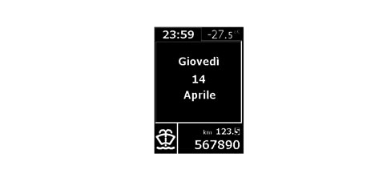
The Trip Meter reading is shown in order to simulate the progress of a mechanical drum milometer (rotation of the various figures upwards). This display is also shown when the information is zeroed.
The trip meter can be zeroed by pressing the "km" button in the control panel.
Tyre pressure display
In versions equipped with the T.P.M.S. system (tyre inflation pressure control system), a screen with tyre pressure conditions is displayed after the Trip A and Trip B information.
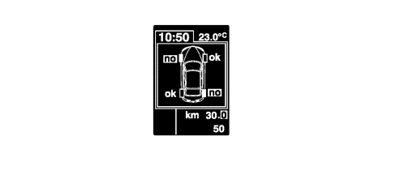
|
|
At key ON and for a short period, dashes are displayed instead of "OK/NO" if the plan view is recalled by pressing the TRIP key. This behaviour is normal as the system is checking the tyre pressure values. |
Seat belt reminder
"FIRST REMINDER CYCLE"; WARNING LIGHT SIGNAL
The "seat belts" warning light signals that the (driver''s or passenger or rear seat) seat belts are not fastened in accordance with the following strategy:
- the warning light comes on in fixed mode, at key-on, if the seat belt has not already been fastened;
- the warning light comes on in fixed mode if, with key on, the belt is unfastened (unless the following conditions apply, when the warning light should flash);
- if the belt is already fastened, the warning light remains off at key on;
- the warning light goes out if, the seat belt is fastened at key on.
- the warning light should remain off at key off.
|
|
The constant warning light indication cannot be excluded. |
"WARNING CYCLE": INDICATION VIA WARNING LIGHT AND BUZZER
The warning cycle is activated for approximately 90 seconds whenever at least one of the following conditions is present under key-on conditions with the seat belt unfastened:
- time elapsed equal to 30 secs and vehicle speed above 4 km/h
- vehicle speed above 25 km/h
- distance travelled more than 500 m
The warning cycle comprises of the warning light flashing (at a frequency of 2 Hz D.C. 50 %), combined with a buzzer sounding.
Operation during the 90 second cycle:
- if the seat belts are fastened, the warning cycle is interrupted immediately (the warning light goes out and the buzzer stops) and the system is ready for a new signal cycle.
- if one of the three events that caused the activation of the warning cycle ceases, it continues for 90 secs.
- if a further warning is required, the warning light indicates the new event by interrupting the current warning cycle (the acoustic signal stops and the seat belt reminder warning light changes from a flashing to a fixed light) and activating the new signal. The system then resumes the warning cycle prior to the new, most recent event. Of course, if the seat belt is fastened during the indication of the new event, the warning cycle is terminated.
- if the key is turned off, the warning cycle stops immediately.
Operation after 90 seconds:
if the seat belt unfastened status persists:
- the acoustic signalling is deactivated
- the warning light flashing cycle stops and the warning light remains on in fixed mode.
The warning cycle is carried out only once in the event of the above conditions arising: therefore, when the cycle is completed (after 90s), the warning cycle is not repeated if the seat belt remains unfastened.
New warning signal:
The warning cycle is only repeated when the seat belt unfastened condition is detected once again (transition from seat belt fastened to seat belt unfastened), and one of the three conditions mentioned above is present.
Warning cycle exclusion mode (warning light flashing /buzzer)
The user can temporarily deactivate the warning cycle using the following procedure:
Within one minute of key-on, proceed as follows:
- fasten the driver and passenger side seat belts. To make the procedure easier, the seat belts can be fastened before the key on.
- unfasten at least one of the seat belts.
The warning cycle automatically becomes active again at each new key-on.
The user can permanently deactivate the warning cycle only via the intervention of Technical Service.
The deactivation procedure must be carried out using a diagnostic instrument (Examiner) in communication with the instrument panel.
No one can deactivate the signal produced by the warning light in the dashboard.This is always present (fixed light) if the seat belt is unfastened.
Display of parking assistance system
The ultrasound parking system used in the display comprises 8 sensors: 4 sensors are fitted in the front bumper, 4 sensors are fitted in the rear bumper.
For more details
See descriptions 5580H PARKING OBSTACLE DETECTION DEVICE
Navigator information repetition
With the function activated, the word "NAVIGATION" is shown in the dedicated area of the display (top section) and the specific symbol is on the left, navigation pictograms and the distance from the next manouevre can be displayed in the centre of the screen.
For more details
See descriptions 5580P CONNECT PANEL
See descriptions 5580M ON-BOARD NAVIGATOR
Telephone information repetition
With the function activated, the word "Telephone" is shown in the dedicated area of the display (top section) and the specific symbol is on the left; the following information can be displayed in the centre of the screen:
- Name (if present in the NIT list) or
- Telephone number (if the name is not in the NIT list);
- Short message (SMS) reception warning
For more details
See descriptions 5580P CONNECT PANEL
Display of voice box
For more details
See descriptions 5580P CONNECT PANEL
Display of sms message receipt
The following are displayed when an SMS message is received:
- The SMS message symbol and the letters "SMS" in the special area of the display (at the top);
- Name (if present in the NIT list) or telephone number (if the name is not in the NIT list);
- The "Incoming message" information for 10 secs in the centre of the display.
For more details
See descriptions 5580P CONNECT PANEL
Display of audio information
With the function activated, the word "AUDIO" and the symbol to the left are shown in the dedicated area of the display (top part) if one of the following functions is activated: TAPE / CD / CD MP3 / CDC.
See descriptions 5570 ACCESSORIES
Display of alfa romeo logo at the key-off
The Alfa Romeo logo is displayed for 3 seconds at the key-off if there is no further information to display The image is fixed for the first second, whilst for the remaining 2 secs it gradually fades away until it disappears completely.
LOW INSTRUMENT PANEL
Speedometer
The system calculates the value of the actual vehicle speed starting with the values supplied by the sensors on the two drive wheels and the value of the actual circumference of the wheels, supplied by the on board computer. The electronic control and operating structure is achieved by means of a microprocessor.
The speedometer reading is produced by means of a stepping motor.
|
|
The instrument panel increases the value of the effective speed slightly, for safety reasons, but never exceeds the maximum tolerance laid down by the directives for the countries where the vehicle is sold. |
The actual speed of the vehicle is provided even if one or two of the drive wheel sensors is broken.
If there is a fault in the vehicle speed sensor the instrument panel returns the indicator to the rest position.
Rev counter
The control and operating electronics use a microprocessor with the reading produced using a stepping motor guaranteeing precision and continuity throughout the entire scale and a reading in extreme operating conditions.
The rev counter on diesel and petrol versions differs through the maximum end of scale value (6000 rpm for diesel versions and 8000 rpm for petrol versions) and through the start of the red danger zone (4500 rpm for diesel versions and 6800 rpm for petrol versions).
Buzzer
A buzzer offers the possibility of managing signals of different intensity for the following functions:
- Signalling doors open with the vehicle moving
- Signalling handbrake applied with the vehicle moving
- Warning speed limit exceeded
- Acoustic feedback on activation of functions using buttons
- Acoustic feedback on memorizing of seat and exterior mirrors position
- Feedback on warnings/alarms shown in the display
Brightness sensor
This sensor, located in the speedometer panel, has the task of measuring the environmental light conditions and of sending this information (day or night) to the Body Computer which, on comparing this information with the status of the side lights, will select the suitable configuration for the vehicle interior lighting (daytime or nightime mode).
With this information available, the behaviour of the instrument is as follows:
- In "daytime" mode the display and the indexes are 100% lit up and the graphics are off. In "nightime" mode the display, the graphics and the indexes can be adjusted to 8 settings and the level set will be transmitted to the components that regulate the brightness (climate control display, radio display).
Keys
The following buttons are fitted on the left steering column switch unit lever:
- “MENU”
- “MENU +”
- “MENU -“
and carry out the following functions: management of the setup menu; dimming and activation/deactivation of the night panel.
The button dedicated to the operation of the "km" trip meter is located in the left panel and has the function of activating/deactivating the display of the trip meter and zeroing it if it is pressed for a long time whilst the display is shown.
Alphanumerical lcd
The visible area of the display, 61 mm wide and 28 mm high, is the two line, negative transreflective type.
The (top) line comprises 9 characters made up of 14 segements for the display of:
- Clock
- Outside temperature with first decimal figure in degrees centigrade
- Setup menu
The second line (at the bottom) is composed of:
- Service spanner symbol
- 6 characters with 7 segments with a decimal point for the milometer and trip meter display and a "TOT" symbol for identifying the type of milometer displayed.
- Snow symbol for ice danger display
- Distance unit of measurement for milometer
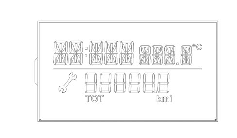
Main functions (low)
Setup menu
The following functions can be displayed whilst the vehicle is being driven by pressing the "MODE" button briefly:
- Selecting activation/deactivation of speed limit and selecting speed limit level.
The following functions can be displayed wtih the vehicle stationary by pressing the "MODE" button briefly:
- Selecting activation/deactivation of speed limit and selecting speed limit level
- Clock adjustment
- Buzzer volume for pressing buttons (roger beep) / alarms / failures / warnings
- Setting unit of measurement for distances
Lighting that can be dimmed with brightness sensor and night panel
In "nightime mode" the LOW version allows the user to adjustment the brightness of the graphics, indexes, instrument panel display, instruments, radio and climate control by pressing the "Menu +" and "Menu -" buttons located at the side on the lights lever.
Dimming is not possible in daytime mode. The indexes and the display are 100% lit and the graphics are switched off.
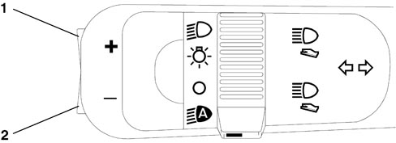
1 Menu +
2 Menu –
The Night Panel function can be activated in the "Nightime Mode " status by pressing the "Menu -" button for about 2 seconds.
The activation of the Night Panel switches off the backlighting of the rev counter panel and the instrument panel graphics, whilst the backlighting of the speedometer panel and the display remains activated and can be dimmed.
Once activated, the Night Panel function can be deactivated in the following ways:
- By pressing the "Menu + " button for about 2 seconds;
- automatically at each key-OFF.
Display of information relating to planned maintenance
When the service interval is reached, a service message is displayed at each key-on: e.g.:
Information relating to the programmed maintenance interval cannot be displayed on request.
Display of engine oil level
Two seconds after the key-ON the display shows information concerning the engine oil level, for about 3 seconds, by switching the six "bars" on/off (bargraph). When the oil level is at maximum all the bars are lit: e.g.:
The gradual switching off of the "bars" indicates a decreasing oil level.
Display of the speed limit function
It is possible to set a speed limit (with a range of between 30 and 250 km/h, in steps of 5 km/h; with a range of between 20 and 155 mph in steps of 5 mph) which, if exceeded, activates a warning procedure for the driver for a period of 10 seconds:
- The word "SPEED" in place of the time
- "km/h" (or "mph") lit up in place of the outside temperature
- writing flashing indicating that the speed limit (e.g. "140") has been exceeded in place of the milometer
- acoustic warning
When the warning cycle is over, the standard screen will be displayed.
Display of the vps function (insertion of teg)
When the instrument panel receives the special signal, it shows the following sequence of messages: "PRESS" - "PEDAL" - "AND" - "START". Each individual message is displayed for a period of 1 second and once activated the succession of messages will be interrupted as soon as the special signal no longer requires it (the succession of messages described above is displayed at least twice).
See descriptions 5520 ENGINE STARTING
Display of "follow me" function
The writing "F XXX" will be shown on the instrument panel display in place of the milometer where:
- "F" is the "follow me home" function activated message
- "XXX" are the seconds of lighting set using the steering column switch unit (after7 impulses of the steering column switch unit the maximum display time - 210 seconds - cannot be increased further).
This display persists for 20 seconds starting from the last time the steering column switch unit is pressed unless the function is deactivated during the display.
Display of the "ice danger" function
After warning the driver of the possible presence of ice on the road, if the outside temperature remains below 3 degrees C, the temperature reading flashes and the "snow" symbol and the "ICE" message are displayed in place of the clock.
At the end of the warning cycle or if the "MODE" button is pressed briefly:
- the message disappears and the screen prior to the event reappears;
- the temperature reading stops flashing;
- the "snow symbol" remains in the special area of the display (as long as T is below 6 °C).
Display of activation of inertia switch
If the inertia switch is activated the message "FPS on" is displayed in place of the milometer and it remains on constantly as long as this condition persists.
Display of clock, date and outside temperature
The hh:mm reading remains present at the key-ON.
The clock can be adjusted using the set-up menu, the hh:mm information in "24h" or "12h" mode can be selected from the information menu.
The clock can be adjusted via the setup menu.
The outside temperature is always shown at the key-on except when the parking sensor screen is displayed.
The unit of measurement is degrees centigrade.
Milometer and trip meter display
The "Total Milometer" information is displayed at the key-ON.
The "Trip Meter" information is displayed by 1 brief press:
The "Trip Meter" can only be zeroed by 1 long press during the display of the "Trip Meter" information.
INSTRUMENT PANEL WIRING DIAGRAM
The instrument panel is inside the B-CAN and is called the NQS (instrument panel node).
The signals for the systems on the C-CAN can be made available by the Body Computer Node gateway.
Its task is to display the vehicle operating parameters and to notify the driver of any possible faults in the on-board electronic systems.Instrument panel pin out:
Refer to the illustration.

connector A (pins 1-9):
|
1 |
ignition-operated power supply |
|
2 |
direct power supply |
|
3 |
B-CAN A |
|
4 |
B-CAN B |
|
5 |
Analogue signal from "Mode, -, +" controls |
|
6 |
Analogue signal from "Trip, up, down" controls |
|
7 |
Earth |
|
8 |
n.c. |
|
9 |
n.c. |
connector B (pins 10-18):
|
10 |
I.E./EOBD failure warning light negative signal |
|
11 |
n.c. |
|
12 |
Dimmed positive command for switch panel lighting LED (n.c.) |
|
13 |
n.c. |
|
14 |
Seat belt not fastened warning light |
|
15 |
Safety acoustic signal activation negative command from NCR (n.c.) |
|
16 |
n.c. |
|
17 |
Engine oil level sensor power supply |
|
18 |
Signal from engine oil level sensor |
connector C (pins 1-9):
|
1 |
Serial line with auxiliary instruments |
|
2 |
Earth for auxiliary instruments module |
|
3 |
Power supply for auxiliary instruments |
|
4 |
n.c. |
|
5 |
Dimmed positive command for auxiliary instruments lighting LED |
|
6 |
n.c. |
|
7 |
Negative signal from milometer reset button |
|
8 |
n.c. |
|
9 |
n.c. |
connector D (pins 10-18):
|
10 |
Signal for turbo pressure reading |
|
11 |
n.c. |
|
12 |
Negative signal from insufficient screen washer fluid level sensor |
|
13 |
n.c. |
|
14 |
n.c. |
|
15 |
n.c. |
|
16 |
Analogue signal from engine oil pressure sender unit (n.c.) |
|
17 |
Earth reference for engine oil temperature/pressure sensors |
|
18 |
Analogue signal from engine oil temperature sender unit |
Fault diagnosis
The diagnosis of the instrument panel can be carried out using the diagnosis equipment available in the network (Examiner or Examiner plus).
The diagnosis socket is located in the EOBD, the line used is the B-CAN line.
The following operations are included in the diagnosis:
- Display of possible errors present in the instrument panel.
- Align the PROXI with the B-CAN (memorizing of specific vehicle parameters), if the instrument panel is being replaced.
- Memorizing milometer mileage.
- Set the mileage for the SERVICE function.
- Carrying out active diagnosis in order to check the operation of the instrument panel.
| When the panel is replaced the alignment of the PROXI should always be carried out; if it is not, then the milometer will flash and the panel will not be operational. |
CENTRE INSTRUMENT CLUSTER
The module located in the centre of the dashboard, directed towards the driver at an angle of 20 degrees.
It comprises three panels including:
- fuel level gauge with reserve warning light;
- engine coolant temperature gauge with overheating warning light;
- engine coolant temperature gauge with overheating warning light;
- engine oil temperature gauge (petrol versions);
- turbo pressure gauge (JTD versions).
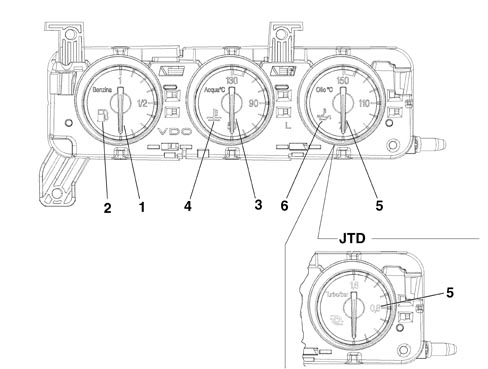
1 - fuel level gauge
2 - reserve warning light
3 - engine coolant temperature gauge
4 - coolant temperature overheating warning light
petrol versions
5 - engine oil temperature gauge
6 - oil overheating warning light
JTD versions
5 - turbo pressure gauge
| The centre module is not a B-CAN node, but is connected by means of a special serial line to the instrument panel node which sends the module all the signals necessary for the display of the required information. |
Fuel level indication
The fuel level sensor signal is the analogue type. It measures the resistive value of the sensor located in the tank. The sensor resistance is about 300 ohm.
With the help of a microprocessor, the interface reads a number corresponding to a resistance value.
The reading is produced by means of a stepping motor.
The display of the fuel level is achieved by an electronic circuit inside the actual module which operates the indicator and also the reserve warning light (about 7 litres).
The internal logic also "dampens" the signal preventing fluctuations.
The warning light comes on for around 4 seconds at the Key ON to check that it is working properly and then goes out. If it remains on flashing, this means that a fault was detected in the connection or in the level gauge.
 | Refuelling should not take place in the following two conditions: - TEG inserted (during refuelling). - Engine running (during refuelling). This, in addition to being in contradiction to aspects linked to SAFETY, does not allow the instrument to recognize the refuelling stage. In these circumstances the gauge cannot indicate the actual level of fuel in the tank for periods of time of 20 - 30 minutes after refuelling. |
Engine coolant temperature signal
The engine coolant temperature reading is produced by means of the stepping motor. The reading corresponding to the "danger zone" is red.
The gauge is operated continuously, without deviations between the position of the pointer and the command sent and without sticking, fluctuations or jerking.
At every Key ON the engine coolant overheating warning light comes on and then goes out.
If warning light on conditions are present over the next 4 seconds (engine coolant overheating or warning light on already at the previous Key OFF), the warning light remains on.
If there is a fault with the engine coolant temperature sensor, the gauge returns to the rest position at the Key OFF (exactly corresponding to the 50 °C reference) and, after the check stage, the general failure warning light in the main panel comes on and, on the HIGH version, the failure message for the engine coolant temperature sensor is displayed.
The engine coolant temperature gauge is operated, via the instrument panel, through the special sensor in the engine. The maximum temperature warning light is always controlled by the sensor located on the engine with another signal, irrespective of the one from the gauge.
The maximum temperature warning light comes on for around 4 seconds at the Key ON to check that it is working properly and then goes out.
Oil temperature signal (petrol engines, high version)
The engine oil temperature reading is produced by means of the stepping motor. The reading corresponding to the "danger zone" is red.
The gauge is operated continuously, without deviations between the position of the pointer and the command sent and without sticking, fluctuations or jerking.
The engine oil temperature gauge is operated - via the instrument panel - by the special sensor located on the engine.
The maximum temperature warning light is controlled by a microprocessor when the value measured exceeds a certain limit.
Turbo pressure signal (jtd engines)
The turbo pressure reading is produced by means of a stepping motor.
The gauge is operated by a microprocessor which processes a PWM signal coming, via the instrument panel, from the engine management control unit which provides information concerning the pressure that the turbocharger guarantees in the intake chamber.
Centre module pin out
Refer to the illustration.
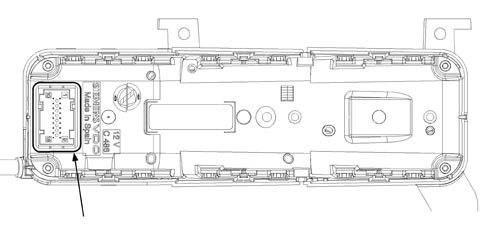
9-way connector
|
1 |
Serial line with instrument panel |
|
2 |
Earth (connection to instrument panel) |
|
3 |
Protected power supply from instrument panel |
|
4 |
Dimmed positive lighting command from instrument panel |
|
5 |
N.C. |
|
6 |
N.C. |
|
7 |
N.C. |
|
8 |
N.C. |
|
9 |
N.C. |